Este é um exemplo de grafo muito utilizado, existem 4 nodos que estão conectados por caminhos com pesos diferentes. O nosso computador, porém, não têm a capacidade de receber como input este grafo, ele têm que ser guardado em um formato de dados que represente todos os nodos e seus pesos.
Este formato pode ir desde listas, pilhas, filas… porém nenhum destes modelos consegue representar todas as possibilidades de expansão de um grafo, por isso, o modelo mais utilizado é o de Matrizes.
Mas como que uma matriz pode representar um grafo? A resposta é simples, cada linha e coluna da matriz representa um nodo, e o valor da interseção entre a linha e a coluna representa o peso da aresta que conecta os dois nodos.
Checkpoint
Utilizando o Grafo 3x3 abaixo, qual vai ser a matriz dele?
Gabarito
Como o algoritmo utiliza 3 loops de for para percorrer todos os elementos da matriz, a complexidade de tempo é O(n³).
Se temos os pesoss de uma matriz
Problema dos menores caminhos
Motivação do problema:
Você é um estudante de comp muito curioso e está aprendendo a resolver o cubo mágico! No entanto, como ainda está aprendendo, comete alguns erros, não aprendeu alguns passos completamente e acaba se perdendo ao resolver o cubo. Agora, imagine que com seus conhecimentos, você pudesse mapear todos os caminhos possíveis entre o estado atual e o estado desejado.
Além disso, você quer saber como resolver o cubo de várias maneiras diferentes para ter certeza de que é um mestre em montá-lo. Existem muitos algoritmos para resolver o cubo, mas o algoritmo Floyd-Warshall, em particular, é muito ambicioso, pois calcula todas as rotas possíveis entre os estados do cubo.
No problema de resolver o cubo, ele retornaria todos os movimentos necessários para terminá-lo, incluindo o menor caminho possível, e seria possível comparar com todos os outros para ver o quão eficiente você foi.
Neste material, vamos introduzir a ideia do algoritmo e, se você for igual ao Peru, vai fazer o algoritmo de montar o cubô magico assim que acabar a aula.
Implementação em Alto Nível | Como Funciona o Algoritmo?
Após apresentado o problema que o Algoritmo propõe resolver, será abordado mais a fundo como este algoritmo funciona, quais os inputs e outputs esperados em sua implementação e demonstrado alguns exemplos práticos.
Iniciando por seu Input, o Floyd Warshall recebe um Grafo - uma matriz de pesos, que representam a complexidade de viajar de um ponto até outro, ou, em outras palavras os pesos das arestas. E utiliza de 3 loops de for para passar por todos os elementos do Grafo recebido. Como é possível ver, abaixo têm uma representação de como seria implementado deste algoritmo:
Pseudocódigo em Python:
def floydWarshall (grafo):
dist = grafo
for k in range (n):
for i in range (n):
for j in range (n):
if dist[i][j] > dist[i][j] + dist[k][j]:
dist[i][j] = dist[i][k] + dist[k][j]
return dist
Checkpoint
Olhando apenas para esse pseudocódigo, você consegue dizer qual a complexidade de tempo desse algoritmo?
Gabarito
Como o algoritmo utiliza 3 loops de for para percorrer todos os elementos da matriz, a complexidade de tempo é O(n³).
Checkpoint
E qual a complexidade de espaço? Lembre-se que o algoritmo recebe uma matriz de pesos e retorna uma matriz de distâncias.
Gabarito
A complexidade de espaço é O(n²), pois o algoritmo utiliza uma matriz de distâncias de tamanho n².
Animação
Buscando entender melhor como o pseudocódigo interage com a matriz de grafos levando a construção de uma nova Matriz que terá os menores caminhos abaixo encontram-se duas animações. A primeira é a animação de Nodes e a segunda de Matrizes:
Mapa de Nodes
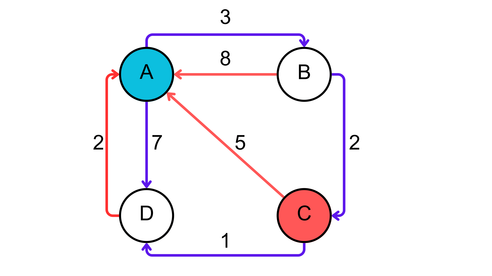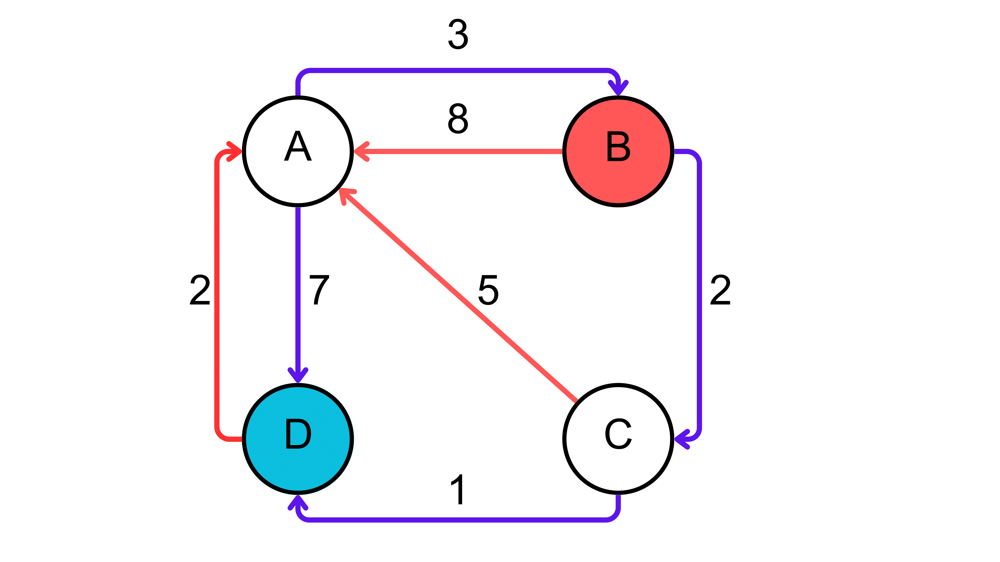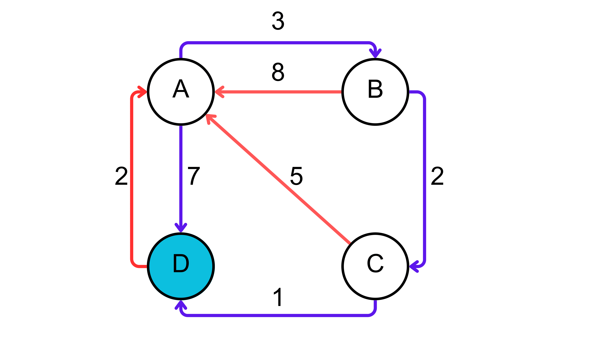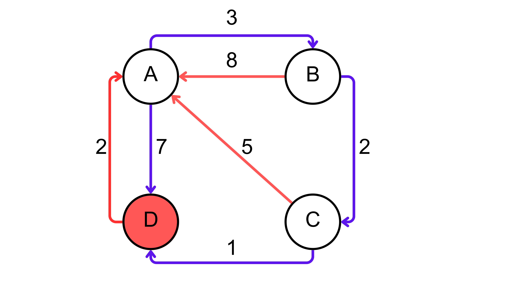
Matriz de Paths
É de grande importância que ambas as animações sejam passadas em conjunto
Checkpoint
Para o primeiro passo do algoritmo, vemos que a coluna principal da matriz de distâncias é inteira preenchida com 0. Por que será que isso acontece?
Gabarito
Isso acontece pois a distância de um nó para ele mesmo é 0! Logo, a coluna principal é preenchida com 0.


 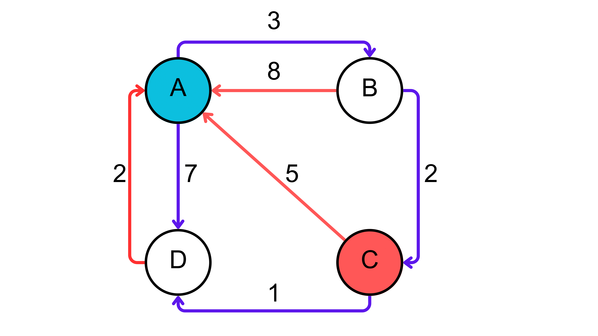
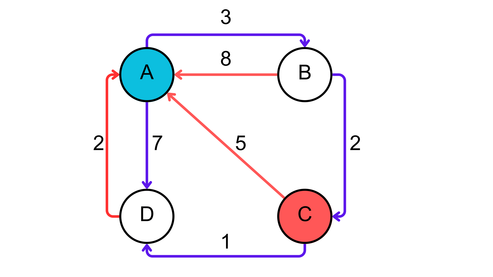


 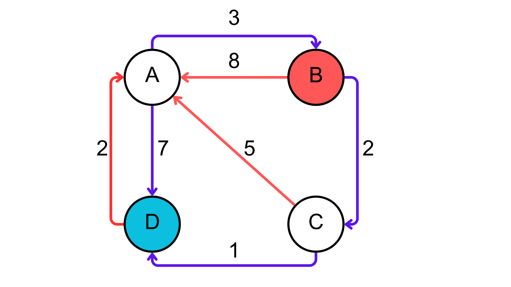
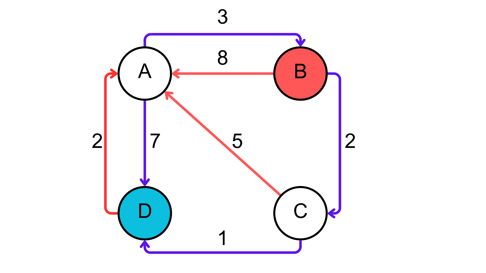


 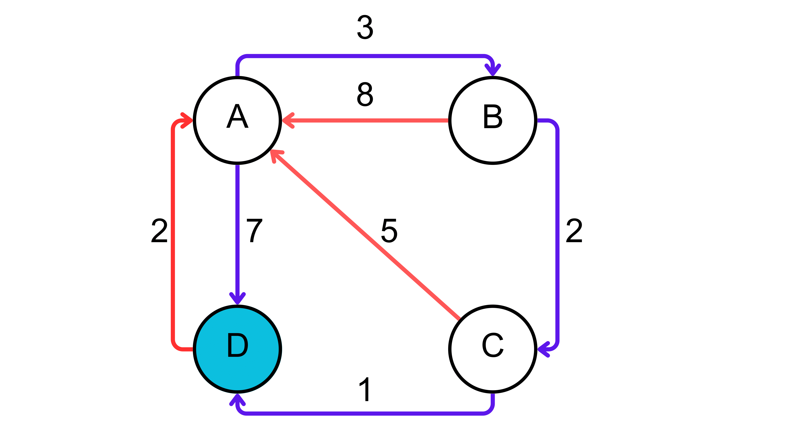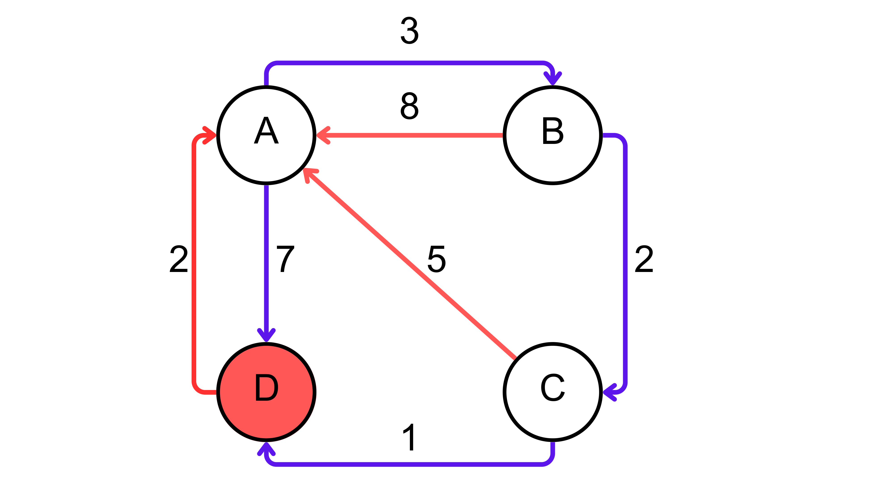
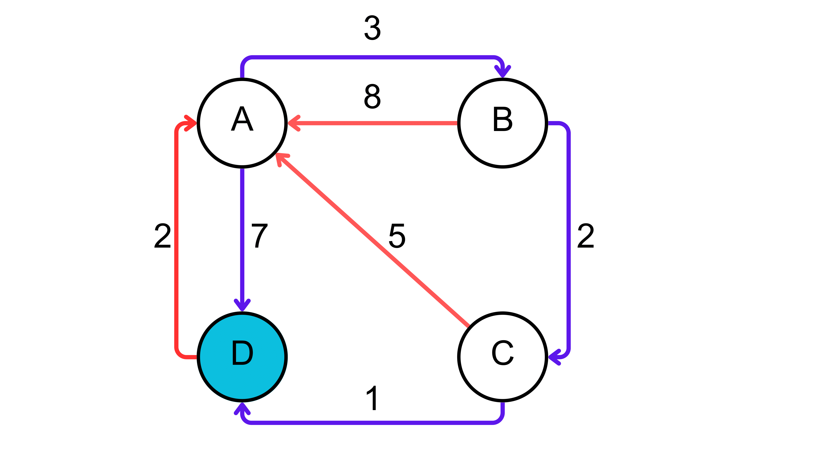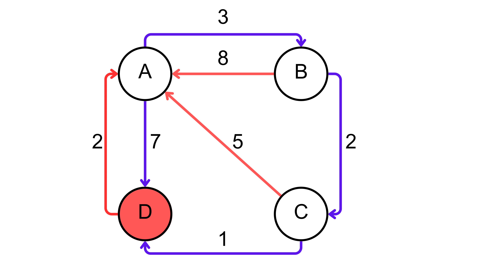